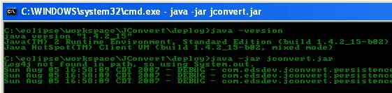

sceenshots
And of Course
How to summary
Below I will explain how to use JConvert with windows XP. All versions of windows should be similar to this explanation. This is platform independent and should work on any os that has Java version 1.4 and higer.
Download and execute the jconvert jar file from sourceforge.net. Depending on your installation of Java on your OS, this can simply mean executing it on download or saving it somewhere and double clicking on the jar file.

If your operating system does not have this file associated, you can execute it using the command line. By pressing the start menu, and choosing run, type in "cmd" and press enter. As a quick check type in java -version and make sure that you have java version 1.4 or higher. Run jconvert by typing java -jar jconvert.jar - please note that your jar file name may vary depending on the release version.
Modifying or adding your own conversions
NOTE: In Jconvert releases 1.0.1 and higher, you can now create custom conversions from the file menu button. Click on
the menu File -> Add Custom Conversion. A dialog box will appear where you can fill in fields and update the conversion file
described below. If you do not have this file, it will be created for you. There is an editable preview of your file below
the form fields. You can modify the text here if you wish to delete rows or modify. When you close the dialog, your new conversions
will be added into the application.
Understanding and modifying the custom conversion file MANUALLY
Very simply create a file named convert_custom.dat and place it in the same directory as the jconvert.jar download. Below
is an example of this file.
#Category/Type,From,From_abbrev,To,To_Abbr,Conversion_Factor,offset
Time,century,,doubleCentury,,1/2,0
Time,century,,year,,15,0
TestType,Ed,,Billy,,2,0
TestType,Ed,,Sarah,,4,0
TestType,Ed,,Tom,,1/2,0
Punishment,OutLate,,Spanking,,3,0
Punishment,Stealing,,Talking Back,,15,0
Punishment,Stealing,,Spanking,,15,0
Punishment,OutLate,,Fight,,3/10,0
Note the fist line that describes what value goes between each comma. This is a comma separated file. You must have exactly six commas per line. Please follow the format in the example. Abbreviations can be provided for each conversion unit. In the first conversion we are creating a conversion of centuries to double centuries. To convert to a double century, you must multiply by one half (one century times 1/2 equals .5 double centuries). The second conversion overwrites the built in conversion of centuries to years. Instead of it being 100, we made it 15 just for fun. This is just to show you that you can create more accurate (although not in this example) conversions to meet your needs. That way if you disagree, think they are wrong, or want more accuracy, you can override the conversions built into jconvert. The rest of the conversions in this example should speak for themselves. Please note that you can enter in a fraction or a decimal number for a conversion. Fractional conversions are always more accurate, so if you know the fraction (or it exists), please use it.
If you feel that there are some conversions in jconvert are inaccurate, please leave feedback. AND if you have a custom conversion file, you can submit it to us and we will evaluate it and incoporate if necessary. Also we will include additional conversions if they are not too off the wall (like some of my examples).
Changing the language
By default, JConvert uses the Locale of your computer. Based on the locale of your computer, it will look for a resource file on your computer that matches your language and region. For example you live in the US and speak english, then your computer's locale is set to english and US. So JConvert will look for the file jcMessages_en_US.properties. If this file is not found, it will choose the default, which is english since that is what is the default for JConvert. Currently JConvert only supports Spanish, French, and Russian. These translations were done by me using google and have not been reviewed by a native speaker. I am always looking for anyone to translate, verify , or update resources for me. If you find a file that supports your language or create your own, you can place the file in the same directory as the JConvert jar file and JConvert will find it.
Note: You can change the language that JConvert uses by opening the Settings screen located under the file menu. This enables you to change the language without changing the language of your computer. There are three values that makup your Locale. This is the country, language, and variant. Most of the time you do not use variant, but it can be used for dialects amoung other things.
Replacing the currency conversions
Currency conversions was somewhat of a tricky matter. All of the current conversions in JConvert are fixed. Currency conversions change dynamically throughout the day. In order to provide conversions for currency, we must pull the data from somewhere on a regular basis. Currency data is tricky as well. If you want it free, you are going to have to pull it from a site that gives it away for free, but this usually means that the data is stale, like getting 20 minute delayed quotes for the stock market. I have implemented a solution for this that goes out to some public websites and pulls data from a web page. If you are a business, then you probably want more accurate data. While I can consult on this, I have provided an architecture to allow you to develope your own. All you have to do is implement the com.edsdev.jconvert.common.CustomConversionDataInterface. There are examples of this if you look at the source com.edsdev.jconvert.common.CustomConversionCurrency. You can point your implementation at a paysite, an EJB, an RSS feed, or whatever you want.
For the geek at heart, this also provides a way for you update these custom classes if the websites change their format, or experiment with pointing at sites that have a more comprehensive selection of currencies.